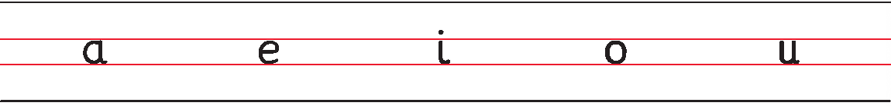
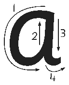

Unit Two - Writing or finger spelling vowel letters in lowercase - Lesson 1: Letter a
Unit Two
Writing or finger spelling vowel letters in lowercase

A picture of the lowercase vowels a, e, i, o, and u shown in source order on handwriting lines.
Lesson 1
Letter a
A picture of an illustration of ant, the example word for this letter lesson.ant
Draw the following pattern in your relevant writing materials
A picture of a joined row of lowercase a forms, with each rounded body flowing directly into the next.
Trace the letter a or write dot one.

A picture of the stroke-direction diagram for lowercase a. Follow the numbered arrows. Start at the top of the round body, curve left and around to close it, then draw down the right side and finish with a short exit stroke.